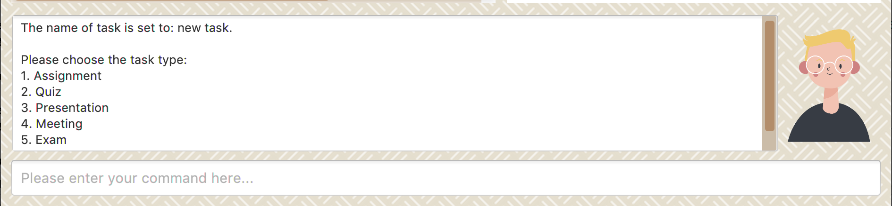
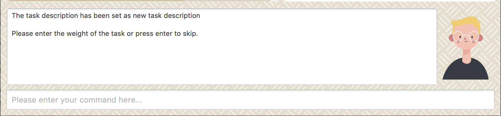
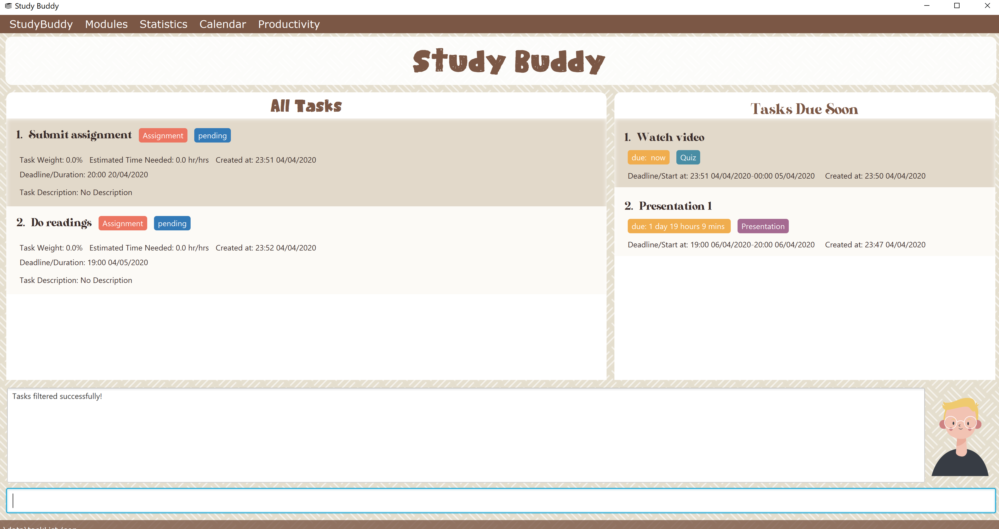

By: Team Drag&Drop Since: Jan 2020
1. Introduction
Study Buddy is a desktop application which is designed for students who wish to manege their module related tasks. More importantly, Study Buddy is optimized for those who prefer to work with a Command Line Interface (CLI) while still having the benefits of a Graphical User Interface (GUI).
You will never have to remember long, wordy commands to use your command line interface, since Study Buddy provides an interactive way of communication, which not only helps to prevent typos, but also makes the application much easier to use!
If you can type fast, Study Buddy can get your module management done faster than traditional GUI apps.
Currently, Study Buddy support both Windows and Mac systems. If you are interested, please jump to the Section 2, “Quick Start” to get started.
Hope you enjoy!
2. Quick Start
-
Study Buddy relies on a particular computer environment to operate correctly, thus to enjoy it, you need to have
Java 11or above installed in your computer. -
When your computer is ready, you can download the latest
studybuddy.jarto get your Study Buddy. -
To better manage your tasks, you may copy the file to the folder you want to use as the home folder for the Study Buddy.
-
Last, double-click the file to start the app and the dashboard should appear in a few seconds.
You may need to adjust the size of the Study Buddy window when you launch it.  Figure 1. Study Buddy Dashboard
Figure 1. Study Buddy Dashboard -
The box with the words
Enter your command here…is where you can key in your desired command and click Enter to execute. -
To view a list of available command, you can key in
helpand click Enter. A more detailed description of our features is available in Section 4, “Features” of this document.
2.1. Commonly Used Symbols
| This symbol indicates something you should take note of. |
| This symbol indicates a tip that you could use. |
| This symbol indicates an aspect that should be used with caution. |
2.2. Useful tips
-
The scroll bar on the right of the response box can be used to view the entire reply.
-
At any point during the execution of a command, you can use
quitto quit the command and start over/try a different command. -
Study Buddy will analyze your input and reply accordingly. It utilizes an "interactive command prompt". (explained in each command’s description under Section 4, “Features”)
-
[enter] indicates hitting the enter key on your keyboard.
-
| indicates an alternative option (i.e. A | B implies A or B).
3. Dashboard
3.1. Understanding the dashboard
The top of the DashBoard is the menu bar. You can access other data such as modules & archives.

The left side features your entire list of tasks to complete.

The right side displays your tasks that are to be due soon

The bottom is your input line. You can type your commands to tell Study Buddy what to do and he will reply you!

4. Features
4.1. Basic features
4.1.1. Help :
This function displays a list of interactive commands that you can use. It also provides a link to this document, (our user guide).
| This is the command you should use if you are unsure of how a command works. |
Example:
Say you have forgotten the format of a command and need some help.
Study Buddy provides a help command for your convenience!
To help:
-
Initiate the command using keyword
help -
Study Buddy should respond with:
 Figure 6. Response to 'help'
Figure 6. Response to 'help'
| Remember to scroll down to see the entire reply. |
4.1.2. Add
This command is for you to record a new task into Study Buddy.
-
Through the interaction, task’s details will be collected.
-
Required information: task name, task type, task deadline or duration
-
Optional information: module, task description, task weight, estimated number of hours needed
-
Input format requirement:
Information Type Format Requirement Example MODULE CODE2 or 3 letters + 4 digits + 1 letter (optional)
CS2101, CS2103T,
LSM1101INDEX NUMBER OF
MODULEInteger number
1
TASK NAMENo more than 20 characters
Demo presentation
INDEX NUMBER OF
TASK TYPEInteger number
1
TASK DEADLINE
OR DURATIONDifferent task types apply different date and time format
Deadline (for Assignment):
HH:mm dd/MM/yyyyDuration (for other task types):
HH:mm dd/MM/yyyy-HH:mm dd/MM/yyyyHH → hour, mm → minutes, dd → date, mm → month, yyyy → yearAssignment:
23:59 01/05/2020Meeting:
14:0 15/04/2020-16:0 15/04/2020TASK DESCRIPTIONNo more than 300 characters
this is a valid description
TASK WEIGHTPositive integer or float number from 0.0 to 100.0
12.0
ESTIMATED NUMBER OF HOURS NEEDEDPositive integer or float number
10.0
-
Other constraints::
-
The application does not allow you to assign date time that has already passed to a task. It must be a time in the future.
-
For duration, the two dates should follow the order of
start date-end date, theend dateshould be later thanstart date. -
The total weight of tasks under the same module is capped to 100.0.
-
Both
archivedandnot archived taskswill be taken into consideration.
-
-
All
index numbersentered should be positive and within a valid range. (i.e When there is only 5 modules available, the valid module index number range is 1 to 5).
-
-
| The application allows for addition of duplicate tasks. It will however confirm with you if you are sure you want to add a duplicate. In case you change your mind, Section 4.1.7, “Delete duplicates” could be helpful. |
To add:
-
Initiate the command using keyword
add -
Study Buddy should respond with
a list of available modulesas: Figure 7. Reponse to 'add'
Figure 7. Reponse to 'add' -
You can link this task with a module by entering its
MODULE CODE|INDEX NUMBER OF MODULEhere , or you can press enter to skip. Here we use1(CS2101) as an example. -
Study Buddy should respond with the module selected and the request of task name as:
 Figure 8. Asks for task’s name
Figure 8. Asks for task’s name -
Here we use
new taskas an example. -
Study Buddy should respond with the task name defined and the request of task type as:
Figure 9. Asks for task’s type -
Here we use
1(Assignment) as an example. -
Study Buddy should respond with the task type defined and the request of task’s date time information as:
 Figure 10. Asks for task’s date time
Figure 10. Asks for task’s date time -
Here we use
14:00 04/05/2020as an example. -
Study Buddy should respond with the date time defined and the request of task’s description as:
 Figure 11. Asks for task’s description
Figure 11. Asks for task’s description -
Here we use
new task descriptionas an example. -
Study Buddy should respond with the description defined and the request of task’s weight as:
Figure 12. Asks for task’s weight -
Here we use
10as an example. -
Study Buddy should respond with the weight defined and the request of the estimated number of hours needed as:
Figure 13. Asks for estimated number of hours needed -
Here we use
10as an example. -
Study Buddy should respond with the task details collected and the request of your confirmation to perform the command as:
 Figure 14. Asks for user conformation to add a new task
Figure 14. Asks for user conformation to add a new task Figure 15. Task details collected
Figure 15. Task details collected -
Now, by pressing enter the new task will be added into your Study Buddy.
-
Study Buddy should respond as:
 Figure 16. New task added
Figure 16. New task added
Remember, you can use quit command to quit at any step.
|
4.1.3. Edit
This command is for you to edit an existing task. To indicate the task you want to edit, you need to provide its index number.
Example:
When you want to update some details of a task or there are some typo in an existing task. You can use this command to edit as you wish.
| Each new value and index number entered will be checked under the same constrain of add command. |
To edit:
-
Initiate the command using keyword
edit -
Study Buddy should respond with:
 Figure 17. Reponse to 'edit'
Figure 17. Reponse to 'edit' -
Type the index of the task you want to edit. here use
1(Quiz 1) as an example. -
The Study Buddy should respond with:
 Figure 18. List of editable fields
Figure 18. List of editable fields -
Type the index of the field you want to edit, here use
2(task name) as an example. -
The Study Buddy should respond with:
Figure 19. Asks for new task name -
Enter new task name, here use
new taskas an example. -
The Study Buddy should respond as below with updated field.
 Figure 20. Task edited
Figure 20. Task edited
4.1.4. Done
This command completes a task. Key in done & you should get this prompt:

Now key in the index of the task you wish to complete.

Enter to confirm changesPress Enter again to confirm your change.

Task set to done successfully! Note that the task in your task list has the tag FINISHED.
You can choose to archive it using the archive command.
4.1.5. Clear
This commands clears all data in the Study Buddy.
| Be careful with this command! It will remove any data you may have entered into the Study Buddy and you cannot retrieve it. |
Example:
Say you have finished a semester and would like to clear everything in your Study Buddy and start over.
You can always clear everything!
To clear:
-
Initiate the command using keyword
clear -
Study Buddy should respond with:
 Figure 24. Response to 'clear'
Figure 24. Response to 'clear'Remember that you can enter quitif you wish to go back! -
Press
enteragain to confirm -
Study Buddy has been cleared completely!
 Figure 25. View empty Study Buddy
Figure 25. View empty Study Buddy
4.1.6. Delete
This commands deletes a task from the existing list, using the index provided by you.
| Once a task is deleted, it cannot be retrieved. Use this command with caution! |
Example:
After having added a task, you realise that there has been a change and you do not need to do that task anymore.
Study Buddy provides you an option to delete that task from the list!
To delete:
-
Initiate the command using keyword
delete -
Study Buddy should respond with:
 Figure 26. Response to 'delete'
Figure 26. Response to 'delete' -
Type the index of the task you want to delete.
 Figure 27. Response to delete index 1
Figure 27. Response to delete index 1 -
Press
enteragain to confirm -
Task has been deleted! You will notice that the task at the index you selected has disappeared from the list of tasks.
 Figure 28. Updated list (without deleted task)
Figure 28. Updated list (without deleted task)
4.1.7. Delete duplicates
This commands deletes all duplicated tasks in the list.
| A task is considered duplicate when the name, type, module, description, weightage, estimated time cost and deadline are the same. (Status is not checked) |
Example:
After having added a duplicated task, you realise that there is no more need for this duplicate task. Yet you do not want to scroll through the entire list to delete it.
Study Buddy provides you an option to delete all your duplicate tasks from the list!
To delete duplicates:
-
Initiate the command using keyword
delete duplicates -
Study Buddy should respond with:
 Figure 29. Response to 'delete duplicates'
Figure 29. Response to 'delete duplicates' -
Press
enteragain to confirm -
Duplicate tasks have been deleted! You will notice that only one copy (most recent) of each task will be left in the list.
 Figure 30. Updated list (without duplicate tasks)
Figure 30. Updated list (without duplicate tasks)
4.1.8. Archive/ Unarchive
This commands stores the specified task into a separate list.
Example:
After a hard days work, you completed some tasks. You don’t want them in your to-do list anymore, but you don’t want to delete them; some of the information in the task card could still be useful.
You can always store them in an archive!
To archive:
-
Initiate the command using keyword
archive -
Study Buddy should respond with:
 Figure 31. Response to 'archive'
Figure 31. Response to 'archive' -
Type the index of the task you want to archive.
 Figure 32. Response to task index
Figure 32. Response to task index -
Press
enteragain to confirm -
Task has been archived! You can view all archived task under the
StudyBuddy→Archived Taskstab. Figure 33. View archived tasks
Figure 33. View archived tasks
4.1.9. Sort
-
This command is for you to reorder the task list in All Tasks panel.
-
Currently you can sort tasks by their
-
Deadline / Task Start Date
-
Task Name
-
Creation Date & Time
-

Format
Example
The All Tasks Panel will update automatically after successfully sort the tasks.
|
4.1.10. Find
Finds tasks whose names contain any of the given keywords.
To find a task:
-
Initiate the command with
find. -
Enter the keyword that you want to search for.
-
You have found a list of tasks that contain your keyword!
Examples
U - find
S - Please type in a keyword that you want to search for.
U - quiz
S - Returns Weekly Quiz and Quiz 3
| To navigate back to the always on display list of tasks, you can use the Section 4.1.12, “List” function. |
4.1.11. Filter
This commands helps you filter your tasks by category. The two categories available are status and type.
Example:
Say you want to view a list of all your pending tasks.
Study Buddy provides an option to filter your list!
To filter:
-
Initiate the command using keyword
filter -
Study Buddy should respond with:
 Figure 35. Response to 'filter'
Figure 35. Response to 'filter' -
Enter your choice. If you enter 1, you have chosen to filter by status.
 Figure 36. Response to filter by 'status'
Figure 36. Response to filter by 'status' -
Suppose this is what your task list looks like before you filter.
 Figure 37. Before filter
Figure 37. Before filter -
You can then proceed to choose what status type you would like to filter by. Here we have filtered by "pending" as an example.
Figure 38. Response to filter by status tag 'Pending' -
At point 3 above, if you enter 2 instead, you have chosen to filter by task types.
 Figure 39. Response to filter by task 'type'
Figure 39. Response to filter by task 'type' -
Once again, imagine your study buddy currently looks like Figure 30 above. (at point 4)
-
You can then proceed to choose what task type you would like to filter by. Here we have filtered by "assignment" as an example.
Figure 40. Response to filter by task type 'assignment'
4.1.12. List
Format:
U- list
S- done!
Description
-
This function allows you to view a list of all your tasks.
Example:
U- list
S- Here is the complete list of tasks:
4.1.13. Refresh
This commands refreshes the list of tasks due soon as well as status tags.
| Due soon list shows tasks due within the next week. Details are in Section 4.3, “Due Soon Tasks” |
| Status tags include information on the tasks' status. Details are in [Status Tags] |
Example:
Say you left Study Buddy open overnight because you fell asleep studying. When you wake up, you notice that the time left for the deadline on the due soon tasks is not accurate.
You can refresh them!
To refresh:
-
Say this is what Study Buddy looks like.
 Figure 41. Current state (needs to be refreshed)
Figure 41. Current state (needs to be refreshed)Suppose you notice that the task "Submit UG" is not due "now" anymore because some time has past since the deadline.
-
Initiate the refresh command using keyword
refresh -
Study Buddy should respond with:
 Figure 42. Response to 'refresh'
Figure 42. Response to 'refresh' -
Press
enteragain to confirm -
Tasks have been refreshed!
 Figure 43. View refreshed Study Buddy
Figure 43. View refreshed Study BuddyYou will notice that the overdue task has now moved out of the due soon list and has the updated status tag "overdue".
4.1.14. Exit
This command exits from Study Buddy.
| All your data will be saved and reloaded when you open the application later! You can find details about this in Section 4.2, “Saving Data” |
Example:
After working all day, you would like to close the application and have a good night’s sleep.
You can always exit the application!
To exit:
-
Initiate the command using keyword
bye -
Study Buddy should respond with:
 Figure 44. Response to 'bye'
Figure 44. Response to 'bye' -
Type 'yes' if you want to exit and anything else if you do not wish to exit.
 Figure 45. Response to any command other than 'yes'
Figure 45. Response to any command other than 'yes'In response to yes, the application should simply close.
Any command other than yes (including enter) will be considered as a quit from the exit.
|
4.2. Saving Data
Study Buddy data is automatically saved in the hard disk after any command that changes the data.
There is no need to save manually.
When the application is closed and re-opened, you should be able to see all the data you have added previously!
4.3. Due Soon Tasks
The due soon task list is always on display in your application under Study Buddy → All tasks
It provides the following functionality:
-
It displays your tasks that are due within the next week. (uses deadline you have provided)
 Figure 46. Due Soon List
Figure 46. Due Soon List -
It automatically sorts these tasks in an ascending order of deadlines.
 Figure 47. Due Soon List
Figure 47. Due Soon List -
It automatically adds applicable tasks when you make changes to your main list, such as add (Section 4.1.2, “Add”) or delete (Section 4.1.6, “Delete”).
-
It displays a tag with the time left to the deadline.
 Figure 48. Due Soon List
Figure 48. Due Soon List -
It provides a Section 4.1.13, “Refresh” function that allows you to refresh time/state of this list if needed.
| Time left is never displayed in days and minutes. Hence if the current time is 9:00 am on 01/04/2020 and the task deadline is 9:02 am on 02/04/2020, it will show time left as 1 day. (not 1 day and 2 minutes) |
| Due soon list will never display finished tasks. If you unarchive a completed task, it will not appear in the due soon list. |
4.4. Modules
The Modules tab is an easy way for students to organise their task, homework and deadlines into various modules.

Modules in the menu barBy default, the Modules tab shows the following:
-
Overview. This tab shows all the modules you will be taking for this semester.
-
No Module Allocated. This tab shows the list of tasks that has not yet been allocated to any module. By default, all tasks will show up here if you have not allocated any tasks to the modules.
4.4.1. Navigation
To navigate to the modules page, click on Modules in the menu bar.

Then click on Show Modules. The module page should show up.

The clicking on the leftmost tab shows the Overview of all your modules. it displays the module’s name and their code.

The rightmost tab shows the list of task that has not been allocated to any modules.

The tabs in the middle are modules that you have added to the modules page.

4.4.3. Create Modules
To create a module, click on Modules in the menu bar.
Alternatively, you can key in create mods into the input line.

CreateClick on Create. A prompt will show up at the bottom of the screen.
Key in the name of your module. The name of this module cannot be the same as your existing modules.

Now key in your Module code. Your Module code should have a 2-3 letter prefix, a 4-digit number, followed by a single postfix.
Correct Module Codes:
LSM1303
CS2040C
IS1103
MA1521
Incorrect Module Codes:
CSSS1234 - Prefix is too long
C0001 - Prefix is too short
ZZ12345 - number is more than 4 digits
A1111XX - Postfix is too long

Press Enter one more time to confirm.

Congratulations, you have added a module to your modules page!
4.4.4. Edit Modules
To create a module, click on Modules in the menu bar.
Alternatively, you can key in edit mods into the input line.

Click on Edit. A prompt will show up at the bottom of the screen.
Key in the code of the module that you want to edit.


Now you have 3 options. You can choose to:
-
Change Module name.
-
Change Module code.
-
Delete Module.
Key in the index of your option.
a) Change Module Name

Now key in your new module name.

Module name changed!
b) Change Module Code

Now key in your new module code. Make sure it follows the correct format as written in 3.7.3.

Module code changed!
c) Delete Module

Press Enter again to confirmed.

Module deleted! All existing task in this module will be moved to No Module Allocated tab.
4.5. Statistics
-
Purpose
-
The Statistics page provides summary of tasks' different aspects, such as:
-
Task Status
-
Module related tasks' deadline/ start date
-
Module related tasks' weight
-
-
It utilizes different charts to make the information more visualized and easy to understand.
-
-
Navigate to Statistics Page
-
You can press the Statistics button in the menu bar to navigate to Statistics Page
 Figure 60. Statistics entry
Figure 60. Statistics entry
-
-
UI introduction & Charts Provided
-
After press Statistics button from menu bar, the Statistics page will display as its initial status.
 Figure 61. Statistics initial page
Figure 61. Statistics initial page -
The left panel displays different charts, and the right panel will display related tasks when you clicking on the chart.
-
Task Status
 Figure 62. right panel update when clicking on pie chart
Figure 62. right panel update when clicking on pie chart -
Module related tasks' deadline/ start date
 Figure 63. right panel update when clicking on area chart’s area
Figure 63. right panel update when clicking on area chart’s area Figure 64. right panel update when clicking on area chart’s data point
Figure 64. right panel update when clicking on area chart’s data point -
Module related tasks' weight
 Figure 65. right panel update when clicking on bar chart
Figure 65. right panel update when clicking on bar chart
-
-
-
Dynamic updating
Each chart will update automatically when you perform
addeditdeletesortfindarchivedonelistandclearThe color theme will also change randomly, hope you enjoy :)
|
As the data of charts are filled dynamically, thus it is possible that their labels can overlap together. This is due to JavaFX chart off-sync and it was raised here. When this issue happens, you can use any command that can trigger chart updating to refresh the chart. |
4.6. Calendar
The calendar feature allows you to visualise your schedule by displaying the number of task you have for the month. This allows students to plan their time efficiently.
The calendar feature can be toggled by clicking Calendar → Display

-
PreviousandNextbuttons can be used to navigate through previous and next months respectively.Current monthbutton brings you to the current date, which is in a blue border. -
Clicking on any date will show you all tasks for that day. Keep in mind that the Index shown in this panel cannot be used for other commands.
4.7. Productivity
The productivity page shows insights related to your productivity over the past day, week and more. By keeping tabs on your past productivity, you can improve your future productivity. The productivity feature also gamifies your task management experience. Doing work has never been more fun!
The daily productivity tab records your the number of tasks you completed today. You can set a daily goal for the number of tasks you want to complete. Completing your goal each day adds to your streak.
On the weekly productivity tab, you can look back on your progress over the past week. This tab displays information about your past productivity.
The Productivity Points tab displays your current Productivity Points (PP) and your progression. You gain Productivity Points upon adding tasks, completing tasks, and using advanced features in StudyBuddy. On the other hand, you lose Productivity Points when your tasks go overdue. Here are some examples of how to obtain Productivity Points in StudyBuddy:
-
Adding a task: +1
-
Completing a task: +10
-
Using advanced features; +? (Explore StudyBuddy to find out!)
-
Letting a task go overdue: -1
5. FAQ
Q: How do I transfer my data to another Computer?
A: Install the app in the other computer and overwrite the empty data file it creates with the file that contains the data of your previous Study Buddy folder (should be under data → taskList.json).